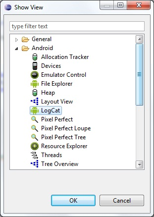
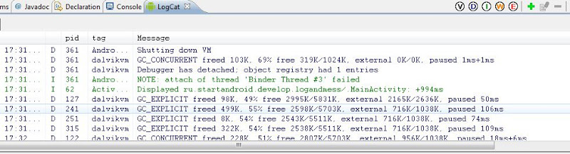
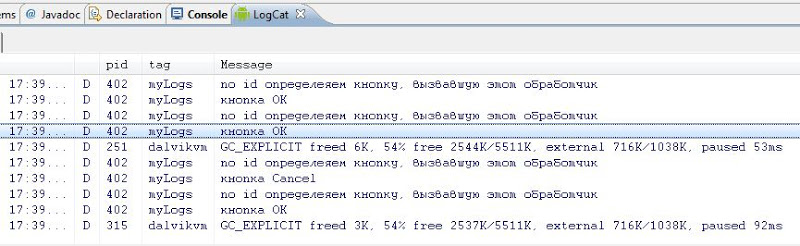
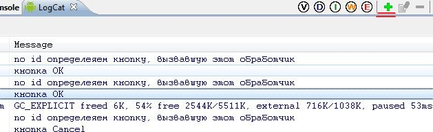
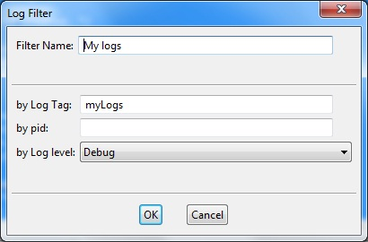
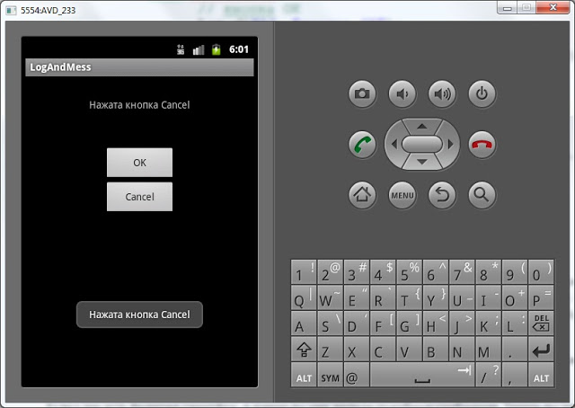

В этом уроке мы:
- рассмотрим логи приложения и всплывающие сообщения
Создадим проект:
Project name: P0121_LogAndMess
Build Target: Android 4.0
Application name: LogAndMess
Package name: ru.startandroid.develop.logandmess
Create Activity: MainActivity
Создадим в main.xml экран, знакомый нам по прошлым урокам про обработчики:
<?xml version="1.0" encoding="utf-8"?>
<LinearLayout
xmlns:android="http://schemas.android.com/apk/res/android"
android:layout_height="match_parent"
android:layout_width="match_parent"
android:orientation="horizontal">
<LinearLayout
android:id="@+id/linearLayout1"
android:layout_height="match_parent"
android:orientation="vertical"
android:layout_width="match_parent"
android:layout_margin="30dp">
<TextView
android:layout_width="wrap_content"
android:text="TextView"
android:layout_height="wrap_content"
android:id="@+id/tvOut"
android:layout_gravity="center_horizontal"
android:layout_marginBottom="50dp">
</TextView>
<Button
android:layout_height="wrap_content"
android:layout_gravity="center_horizontal"
android:id="@+id/btnOk"
android:text="OK"
android:layout_width="100dp">
</Button>
<Button
android:layout_height="wrap_content"
android:layout_gravity="center_horizontal"
android:id="@+id/btnCancel"
android:text="Cancel"
android:layout_width="100dp">
</Button>
</LinearLayout>
</LinearLayout>Алгоритм приложения будет тот же. По нажатию кнопок меняется текст. Обработчик - Activity.
public class MainActivity extends Activity implements OnClickListener {
TextView tvOut;
Button btnOk;
Button btnCancel;
/** Called when the activity is first created. */
@Override
public void onCreate(Bundle savedInstanceState) {
super.onCreate(savedInstanceState);
setContentView(R.layout.main);
// найдем View-элементы
tvOut = (TextView) findViewById(R.id.tvOut);
btnOk = (Button) findViewById(R.id.btnOk);
btnCancel = (Button) findViewById(R.id.btnCancel);
// присваиваем обработчик кнопкам
btnOk.setOnClickListener(this);
btnCancel.setOnClickListener(this);
}
@Override
public void onClick(View v) {
// по id определяем кнопку, вызвавшую этот обработчик
switch (v.getId()) {
case R.id.btnOk:
// кнопка ОК
tvOut.setText("Нажата кнопка ОК");
break;
case R.id.btnCancel:
// кнопка Cancel
tvOut.setText("Нажата кнопка Cancel");
break;
}
}
}Сохраним, запустим. Убедимся, что все работает.
Логи приложения
Когда вы тестируете работу приложения, вы можете видеть логи работы. Они отображаются в окне LogCat. Чтобы отобразить окно откройте меню Window > Show View > Other … В появившемся окне выберите Android > LogCat

Должна появится вкладка LogCat

Рассмотрим эту вкладку подробней. Логи имеют разные уровни важности: ERROR, WARN, INFO, DEBUG, VERBOSE (по убыванию). Кнопки V D I W E (в кружках) – это фильтры и соответствуют типам логов. Опробуйте их и обратите внимание, что фильтр показывает логи не только своего уровня, но и уровней более высокой важности. Также вы можете создавать, редактировать и удалять свои фильтры – это мы рассмотрим чуть дальше.
Давайте смотреть, как самим писать логи. Делается это совсем несложно с помощью класса Log и его методов Log.v() Log.d() Log.i() Log.w() and Log.e(). Названия методов соответствуют уровню логов, которые они запишут.
Изменим код MainActivity.java. Возьмем все каменты из кода и добавим в DEBUG-логи с помощью метода Log.d. Метод требует на вход тэг и текст сообщения. Тэг – это что-то типа метки, чтобы легче было потом в куче системных логов найти именно наше сообщение. Добавим описание тега (TAG) и запишем все тексты каментов в лог.
public class MainActivity extends Activity implements OnClickListener {
TextView tvOut;
Button btnOk;
Button btnCancel;
private static final String TAG = "myLogs";
/** Called when the activity is first created. */
@Override
public void onCreate(Bundle savedInstanceState) {
super.onCreate(savedInstanceState);
setContentView(R.layout.main);
// найдем View-элементы
Log.d(TAG, "найдем View-элементы");
tvOut = (TextView) findViewById(R.id.tvOut);
btnOk = (Button) findViewById(R.id.btnOk);
btnCancel = (Button) findViewById(R.id.btnCancel);
// присваиваем обработчик кнопкам
Log.d(TAG, "присваиваем обработчик кнопкам");
btnOk.setOnClickListener(this);
btnCancel.setOnClickListener(this);
}
@Override
public void onClick(View v) {
// по id определяем кнопку, вызвавшую этот обработчик
Log.d(TAG, "по id определяем кнопку, вызвавшую этот обработчик");
switch (v.getId()) {
case R.id.btnOk:
// кнопка ОК
Log.d(TAG, "кнопка ОК");
tvOut.setText("Нажата кнопка ОК");
break;
case R.id.btnCancel:
// кнопка Cancel
Log.d(TAG, "кнопка Cancel");
tvOut.setText("Нажата кнопка Cancel");
break;
}
}
}Eclipse ругнется, что не знает класс Log. Обновите импорт (CTRL+SHIFT+O) и, если спросит, выберите android.util.Log. Запустим приложение, понажимаем кнопки и посмотрим логи

Видно, что все отлично записалось. Чтобы сделать просмотр удобней, создадим свой фильтр. Жмем значок +

Имя фильтра произвольное, например, «My logs». Log Tag – это как раз значение константы TAG, которая описана в нашем коде и использовалась в методе Log.d, т.е. - "myLogs". Pid оставляем пустым, это id процесса. Уровень поставим Debug

и жмем OK. Появилась новая вкладка My logs, на которой отображаются логи, соответствующие только что созданному фильтру.
Мы помещали в лог текст, но разумеется, вы можете писать, например, значения интересующих вас переменных (приведенные к типу String).
Иногда бывает, что логи не отображаются во вкладке LogCat, хотя AVD запущен, приложение работает без проблем. В таком случае должно помочь следующее: в Eclipse идем в меню Window > Open Perspective > Other > DDMS. Откроется немного другой набор окон чем обычно. Там найдите вкладку Devices и в ней должно быть видно ваше AVD-устройство, кликните на него и логи должны появиться. Чтобы вернуться в разработку: Window > Open Perspective > Java.
Всплывающие сообщения
Приложение может показывать всплывающие сообщения с помощью класса Toast. Давайте подредактируем метод onClick. Сделаем так, чтобы всплывало сообщение о том, какая кнопка была нажата.
public void onClick(View v) {
// по id определяем кнопку, вызвавшую этот обработчик
Log.d(TAG, "по id определяем кнопку, вызвавшую этот обработчик");
switch (v.getId()) {
case R.id.btnOk:
// кнопка ОК
Log.d(TAG, "кнопка ОК");
tvOut.setText("Нажата кнопка ОК");
Toast.makeText(this, "Нажата кнопка ОК", Toast.LENGTH_LONG).show();
break;
case R.id.btnCancel:
// кнопка Cancel
Log.d(TAG, "кнопка Cancel");
tvOut.setText("Нажата кнопка Cancel");
Toast.makeText(this, "Нажата кнопка Cancel", Toast.LENGTH_LONG).show();
break;
}
}Разберем синтаксис вызова. Статический метод makeText создает View-элемент Toast. Параметры метода:
- context – пока не будем вдаваться в подробности, что это такое и используем текущую Activity, т.е. this.
- text – текст, который надо показать
- duration – продолжительность показа (Toast.LENGTH_LONG - длинная, Toast.LENGTH_SHORT - короткая)
Toast создан и чтобы он отобразился на экране, вызывается метод show(). Сохраняем, запускаем, проверяем.
